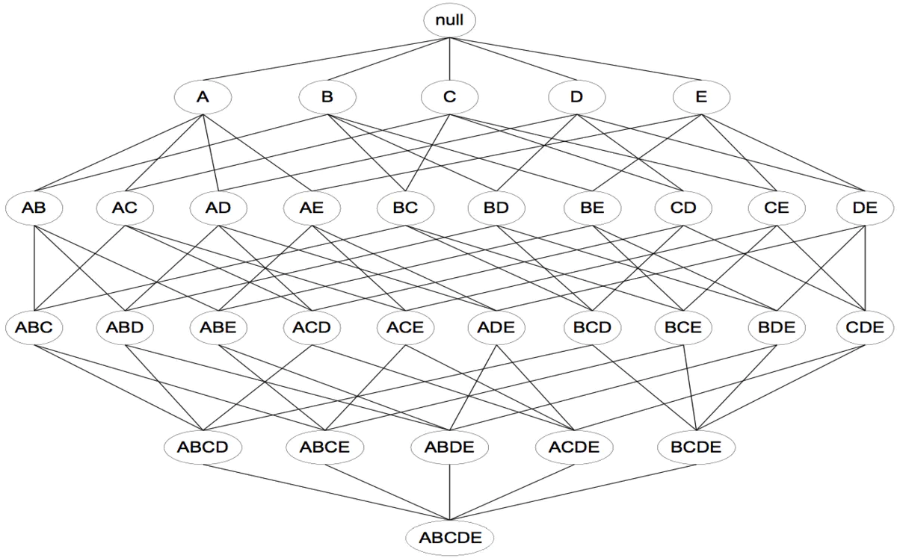
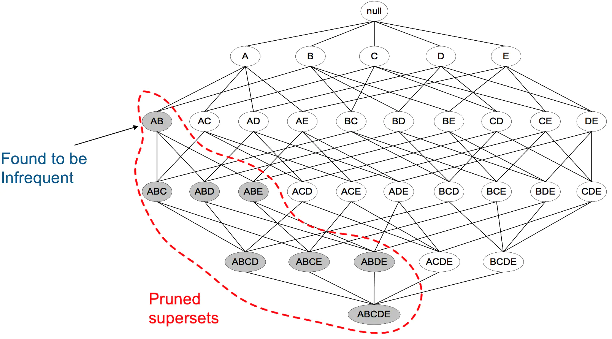
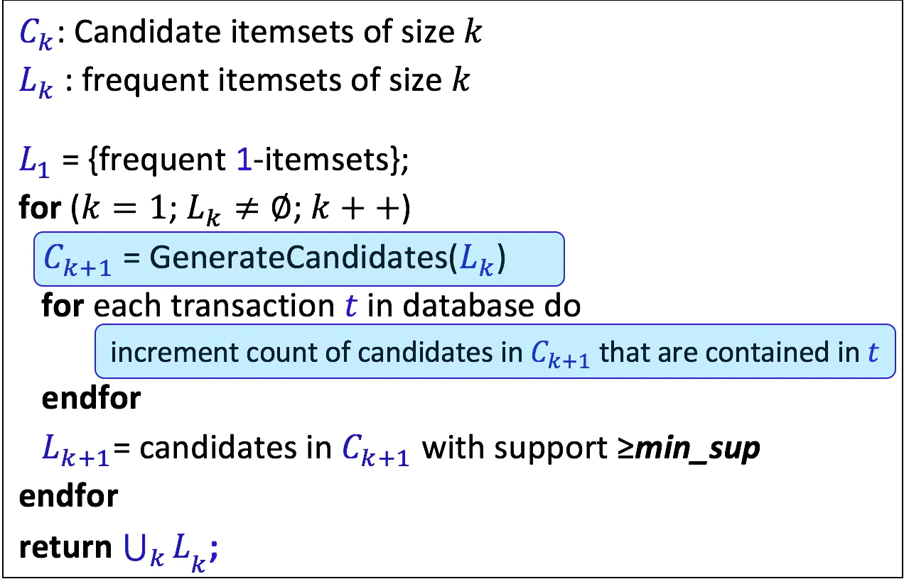
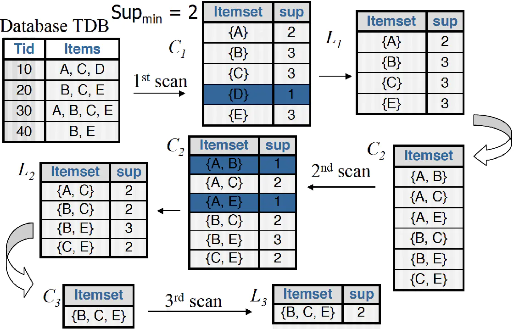
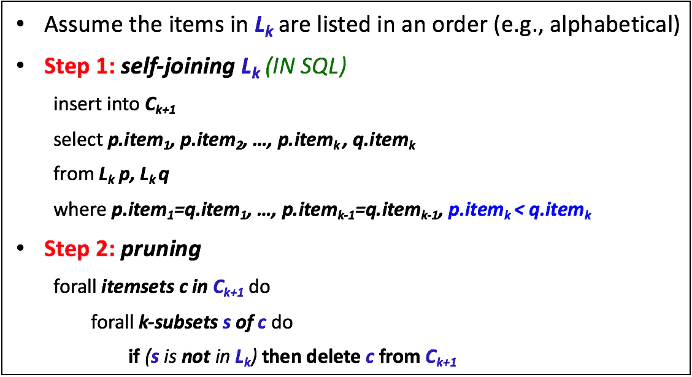
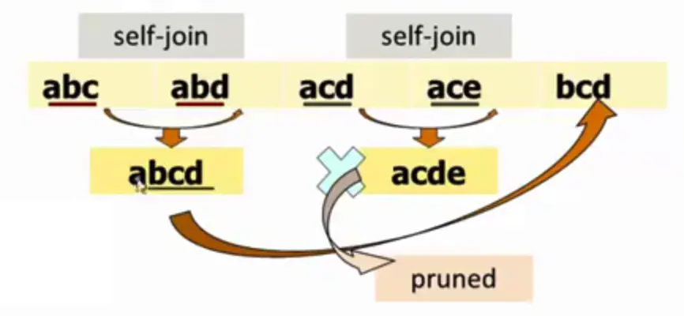

引言 关联规则挖掘是数据挖掘中最活跃的研究方法之一 。最早由 Agrawal 商品之间的关联规则 。这些规则刻画了顾客购买行为 模式，可以用来指导商家科学地安排进货，库存以及货架设计等。
之后诸多的研究人员对关联规则的挖掘问题进行了大量的研究。他们的工作涉及到关联规则的挖掘理论的探索，原有的算法的改进和新算法的设计，并行关联规则挖掘(Parallel Association Rule Mining)，以及数量关联规则挖掘(Quantitive Association Rule Mining) 等问题。
在提高挖掘规则算法的效率、适应性、可用性以及应用推广等方面，许多学者进行了不懈的努力。
相关概念 项与项集 设I t e m S e t = { i t e m 1 , i t e m 2 , … , i t e m n } ItemSet=\{item_1, item_2, …, item_n\} I t e m S e t = { i t e m 1 , i t e m 2 , … , i t e m n } i t e m k ( k = 1 , 2 , … , n ) item_k(k=1,2,…,n) i t e m k ( k = 1 , 2 , … , n ) 项 ；项的集合称为项集 （I t e m S e t ItemSet I t e m S e t k k k k k k k − i t e m s e t k-itemset k − i t e m se t
事务与事务集 一个事务 （又称：交易）T T T I t e m S e t ItemSet I t e m S e t 子集 ，每个事务均与一个唯一标识符T i d Tid T i d 事务集 D D D
关联规则 关联规则是形如A → B A\to B A → B 蕴涵式 ；
其中A、B均为I t e m S e t ItemSet I t e m S e t 子集 且均不为空集 ，且A ∩ B = ∅ A\cap B=\varnothing A ∩ B = ∅
支持度 (support ) 关联规则的支持度定义如下：
Support ( A ) = # ( A ) ∣ D ∣ Support ( A → B ) = P ( A , B ) = # ( A , B ) ∣ D ∣ \begin{aligned} \text{Support}(A)&=\frac {\#(A)}{|D|}\\ \text{Support}(A\to B)&=P(A,B)=\frac {\#(A,B)}{|D|} \end{aligned} Support ( A ) Support ( A → B ) = ∣ D ∣ # ( A ) = P ( A , B ) = ∣ D ∣ # ( A , B )
其中，# ( ⋅ ) \#(·) # ( ⋅ ) 频度 或计数 .
置信度 (confidence ) Confidence ( A → B ) = P ( B ∣ A ) = P ( A , B ) P ( A ) = # ( A , B ) # ( A ) \text{Confidence}(A \to B)=P(B|A)=\frac{P(A , B)}{P(A)}=\frac{\#(A , B)}{\#(A)} Confidence ( A → B ) = P ( B ∣ A ) = P ( A ) P ( A , B ) = # ( A ) # ( A , B )
提升度 (lift ,或兴趣度 interest ) Lift ( A → B ) = P ( A , B ) P ( A ) P ( B ) = P ( B ∣ A ) P ( B ) \text{Lift}(A\to B)=\frac{P(A, B)}{P(A)P(B)}=\frac{P(B|A)}{P(B)} Lift ( A → B ) = P ( A ) P ( B ) P ( A , B ) = P ( B ) P ( B ∣ A )
强关联规则 若对关联规则：A → B A\to B A → B S u p p o r t ( A → B ) ≥ S u p M i n Support(A\to B)\ge SupMin S u pp or t ( A → B ) ≥ S u pM in C o n f i d e n c e ( A → B ) ≥ C o n f M i n Confidence(A\to B)\ge ConfMin C o n f i d e n ce ( A → B ) ≥ C o n f M in
则称该关联规则为强关联规则 ，否则为弱关联规则。
其中，S u p M i n SupMin S u pM in 最小支持度 ，用于衡量规则需要满足的最低重要性；
C o n f M i n ConfMin C o n f M in 最小置信度 ，表示关联规则需要满足的最低可靠性.
算法步骤 算法思路 大多数关联规则挖掘算法通常采用的一种策略是，将关联规则挖掘任务分解为如下两个 主要的子任务 ：
频繁项集 产生（Frequent Itemset Generation）：发现满足最小支持度阈值的所有项集，这些项集称作频繁项集。强关联规则 的产生（Rule Generation）：从上一步发现的频繁项集中提取所有高置信度的规则，这些规则称作强规则。根据上述概念，我们可以很直观 地得出如何进行挖掘。
以商品购买为例，假设一家商店，出售5种商品，分别为商品A，B，C，D，E。希望通过挖掘买家购买商品的订单数据，来进行商品之间的组合促销或者说是摆放位置，那么我们需要怎么做呢？
Step1:对商品进行抽象表示，即是设I t e m S e t = { A , B , C , D , E } ItemSet=\{A,B,C,D,E\} I t e m S e t = { A , B , C , D , E }
Sept2:枚举所有可能的购买组合，即是找出属于I t e m S e t ItemSet I t e m S e t 项集 ，得到数据库。一般我们用 “格结构 ”（Lattice structure ）表述；

Step3:遍历所有可能项集，通过计算对应的S u p p o r t ( ⋅ ) Support(·) S u pp or t ( ⋅ ) S u p M i n SupMin S u pM in
Step4:遍历所有频繁项集，通过计算对应的C o n f i d e n c e ( ⋅ ) Confidence(·) C o n f i d e n ce ( ⋅ ) C o n f M i n ConfMin C o n f M in
重要性质/剪枝 在上述算法步骤中，我们很容易发现遍历所有的可能项集是十分“暴力 ”的，当商品数很多的情况下很容易出现 组合爆炸 的情况。
因此，在Aprior算法中，提出了如下性质或称先验原理 ：
性质1 ：如果一个集合是频繁项集，则它的所有子集都是频繁项集如{ X , Y , Z } \{X,Y,Z\} { X , Y , Z } { X , Y } 、 { X , Z } 、 { Y , Z } \{X,Y\}、\{X,Z\}、\{Y,Z\} { X , Y } 、 { X , Z } 、 { Y , Z } 性质2 ：如果一个集合不是频繁项集，则它的所有超集都不是频繁项集如{ X } \{X\} { X } S u p p o r t ( X ) ≤ S u p M i n Support(X) \le SupMin S u pp or t ( X ) ≤ S u pM in P ( X → Y ) ≤ S u p M i n P(X\to Y)\le SupMin P ( X → Y ) ≤ S u pM in 
上图表示当我们发现{A,B}是非频繁集时，就代表所有包含它的超级也是非频繁的，即可以将它们都剪除。
伪代码 
样例演示 下面给出一个具体的例子，最开始数据库里有4条事务，通过将S u p M i n = 2 SupMin=2 S u pM in = 2 { B , C , E } \{B,C,E\} { B , C , E }

其中，左下角L 2 L_2 L 2 C 3 C_3 C 3 伪代码 中第一个蓝色框条 所标注的：C k + 1 = G e n e r a t e C a n d i d a t e s ( L k ) C_{k+1}=GenerateCandidates(L_k) C k + 1 = G e n er a t e C an d i d a t es ( L k )
其执行伪代码如下：

表示，对L k L_k L k S e l f − J o i n Self-Join S e l f − J o in k + 1 k+1 k + 1 C k + 1 C_{k+1} C k + 1
而合并之后同样需要剪枝，即P r u n i n g Pruning P r u nin g L k L_k L k C k + 1 C_{k+1} C k + 1
图示如下：

以上面的实例为例，k = 3 k=3 k = 3 L k = { { A , B , C } , { A , B , D } , { A , C , D } , { A , C , E } , { B , C , D } } \begin{aligned}L_k=\left\{ \{A,B,C\},\{A,B,D\},\{A,C,D\},\{A,C,E\},\{B,C,D\} \right\}\end{aligned} L k = { { A , B , C } , { A , B , D } , { A , C , D } , { A , C , E } , { B , C , D } } 两两合并 ：
Ω 1 = { A , B , C } ∪ { A , B , D } = { A , B , C , D } Ω 2 = { A , C , D } ∪ { A , C , E } = { A , C , D , E } \begin{aligned} \Omega_1=\{A,B,C\}\cup\{A,B,D\}=\{A,B,C,D\}\\ \Omega_2=\{A,C,D\}\cup\{A,C,E\}=\{A,C,D,E\} \end{aligned} Ω 1 = { A , B , C } ∪ { A , B , D } = { A , B , C , D } Ω 2 = { A , C , D } ∪ { A , C , E } = { A , C , D , E }
从而有：C k + 1 = { Ω 1 , Ω 2 } C_{k+1}=\{\Omega_1,\Omega_2\} C k + 1 = { Ω 1 , Ω 2 }
但其中，Ω 1 \Omega_1 Ω 1 { B , C , D } ∈ L k \{B,C,D\}\in L_k { B , C , D } ∈ L k Ω 2 \Omega_2 Ω 2 { B , C , D } ∉ L k \{B,C,D\}\notin L_k { B , C , D } ∈ / L k L k L_k L k Ω 2 \Omega_2 Ω 2
f o r m C k + 1 d e l e t e Ω 2 form\quad C_{k+1} \quad delete \quad \Omega_2 f or m C k + 1 d e l e t e Ω 2
最终，C k + 1 = { Ω 1 } C_{k+1}=\{\Omega_1\} C k + 1 = { Ω 1 }
Python实现 1 2 3 4 5 6 7 8 9 10 11 12 13 14 15 16 17 18 19 20 21 22 23 24 25 26 27 28 29 30 31 32 33 34 35 36 37 38 39 40 41 42 43 44 45 46 47 48 49 50 51 52 53 54 55 56 57 58 59 60 61 62 63 64 65 66 67 68 69 70 71 72 73 74 75 76 77 78 79 80 81 82 83 84 85 86 87 88 89 90 91 92 93 94 95 96 97 98 99 100 101 102 103 104 105 106 107 def loadDataSet (): ''' 可自定义读取数据方式，此处仅作示例 ''' datas = [['l1' , 'l2' , 'l5' ], ['l2' , 'l4' ], ['l2' , 'l3' ], ['l1' , 'l2' , 'l4' ], ['l1' , 'l3' ], ['l2' , 'l3' ], ['l1' , 'l3' ], ['l1' , 'l2' , 'l3' , 'l5' ], ['l1' , 'l2' , 'l3' ]] return datas def createC1 (DataSet ): C1 = [] for T in DataSet: for item in T: if not [item] in C1: C1.append([item]) C1.sort() return list (map (frozenset ,C1)) def GenerateFrequent (D,Ck,SupMin ): numS = {} for Tid in D: for item in Ck: if item.issubset(Tid): if not item in numS: numS[item] = 1 else : numS[item] += 1 numItems = float (len (D)) Lk = [] supportData = {} for item in numS: support = numS[item]/numItems if support >= SupMin: Lk.insert(0 ,item) supportData[item] = support return Lk,supportData def GenerateCandidates (Lk,k ): Ck = [] lenLk = len (Lk) for i in range (lenLk): for j in range (i+1 ,lenLk): L1 = list (Lk[i])[:k-2 ];L1.sort() L2 = list (Lk[j])[:k-2 ];L2.sort() if L1 == L2: Ckitem = Lk[i]|Lk[j] if is_apriori(Ckitem,Lk): Ck.append(Ckitem) return Ck def is_apriori (Ckitem,Lk ): for item in Ckitem: if Ckitem-frozenset ([item]) not in Lk: return False return True def aprior (DataSet,SupMin=0.2 ): C1 = createC1(DataSet) D = list (map (set ,DataSet)) L1,supportData = GenerateFrequent(D,C1,SupMin) all_L = [L1] k = 2 while (len (all_L[k-2 ])>0 ): Ck = GenerateCandidates(all_L[k-2 ],k) Lk,supK = GenerateFrequent(D,Ck,SupMin) supportData.update(supK) all_L.append(Lk) k += 1 return all_L,supportData def generateRules (all_L,supportData,ConfMin=0.7 ): bigRuleList = [] subSetList = [] for i in range (0 ,len (all_L)): for freqSet in all_L[i]: for subSet in subSetList: if subSet.issubset(freqSet): conf = supportData[freqSet]/supportData[freqSet-subSet] bigRule = (freqSet-subSet,subSet,conf) if conf >= ConfMin: print (bigRule[0 ],'=>' ,bigRule[1 ],' conf:' ,conf) bigRuleList.append(bigRule) subSetList.append(freqSet) return bigRuleList if __name__=='__main__' : DataSet=loadDataSet() L,supportData=aprior(DataSet) bigRules = generateRules(L,supportData)
参考资料 1.Apriori算法详解|简书
2.Aprior算法介绍与python实现
3.【机器学习】Apriori算法——原理及代码